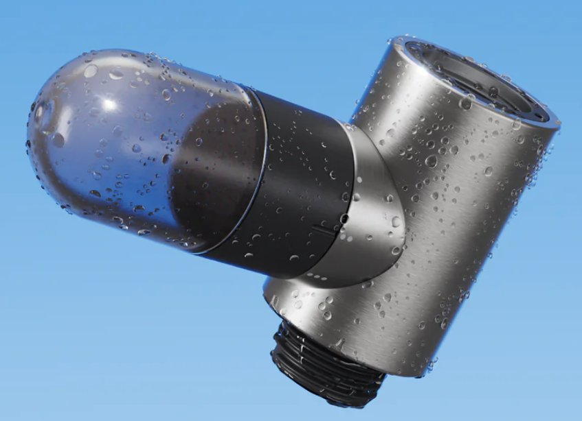
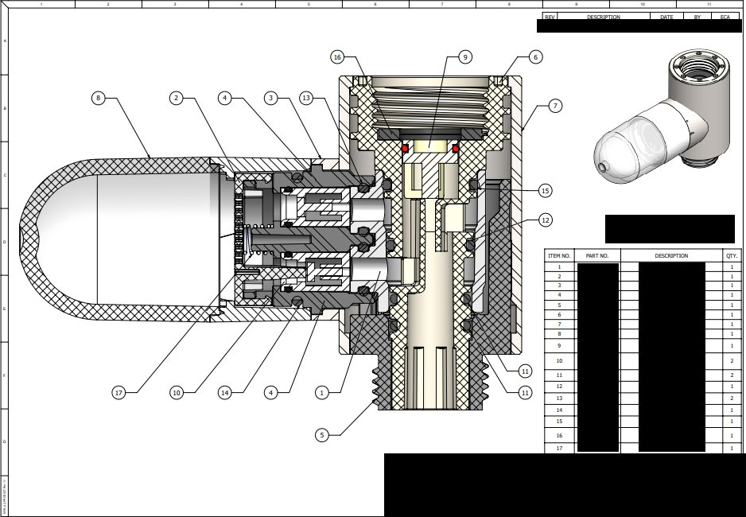
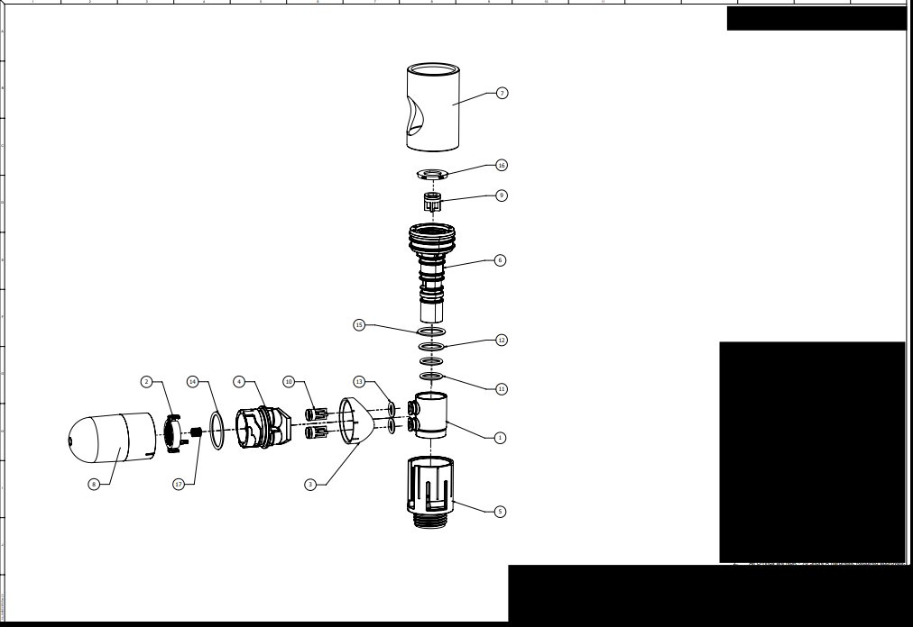

Client — Hai (US)
Through — GWA Group
Status — Patent Pending
Gethai
Fuse
A patent-pending product for Hai — a smart-shower brand in the US — that releases beauty products directly into the shower's water stream. A precision mechanism inside a deliberately simple form.

The Fuse exists at an unusual intersection — water pressure engineering, cosmetics chemistry, and a consumer unboxing experience that has to feel inevitable. Beauty products meet plumbing rarely, and the Fuse needed to do so reliably, in a form that read as premium the moment it left the box.
I led the mechanical design and managed two parallel relationship tracks: Hai's marketing and brand teams on one side, the beauty product manufacturers and Asian tooling partners on the other. Two engineering ideas shaped the product. The first is rotational — once the Fuse is locked onto the shower arm, the outer stainless body can be freely rotated around a fixed internal core. The cutaway shows the locked element through the centre; the housing spins around it, sealed and operational at any orientation. The second is the valve actuation: the internal valves were designed to engage as the bulb is placed onto the body, and disengage as it's removed. Loading a cartridge is the same gesture as opening the flow.
The product launched into the Hai range. Patent pending.

